| Larch: X-ray Data Analysis |
An important aspect of x-ray spectroscopies and scattering analysis is having access to tabulated values for x-ray properties of various elements and compounds. Larch provides several functions to access these x-ray properties. These include basic atomic properties like atomic number and mass, tabulated values of characteristic energies and transition probabilites for core electron levels, absorption cross-sections, elastic scattering terms, and anomalous scattering corrections.
Much of the speectroscopic data comes from the compilation of Elam, Ravel and Sieber [ElamRavelSieber]. The core-hole widths for excited electronic levels comes from Keski-Rahkonen and Krause [KeskiRahkonenKrause], while elastic x-ray scattering data, f0(q), is derived from Waasmaier and Kirfel [WaasmaierKirfel]. Anomalous cross-sections from Cromer and Liberman [CromerLiberman] (as implemented by Brennan and Cowan [BrennanCowan] ) are provided. In addition, Chantler’s [Chantler] values for absorption cross-sections and anomalous x-ray scattering factors are available. Except for the anomalous cross-section data from Cromer and Liberman (which is implemented using the Fortran routine by Brennan and Cowan with slight modifications), the data is accessed through a portable SQLite3 database file. This implementation was originally done by Darren Dale from CHESS (see https://github.com/praxes/elam_physical_reference), with some additions and alterations made for Larch.
The Table of X-ray data functions gives a brief description to the available functions for accessing these data. More detailed descriptions of function arguments, returned values, and so on are then given.
Table of X-ray data functions. These functions calculate and return some element-specific properties. Most data extends to Z=98 (Cf). Data for elements with atomic number > 92 (U) may not be available and when provided may not be very reliable. Except where noted, the data comes from Elam, Ravel, and Sieber.
function description atomic_number() atomic number from symbol atomic_symbol() atomic symbol from number atomic_mass() atomic mass atomic_density() atomic density (for pure element) chemparse() parse a chemical formula to a dictionary of components xray_edge() xray edge data for a particular element and edge xray_line() xray emission line data for an element and line xray_edges() dictionary of all x-ray edges data for an element xray_lines() dictionary of all x-ray emission line data for an element fluo_yield() fluorescence yield and weighted line energy core_width() core level width for an element and edge (Keski-Rahkonen and Krause) mu_elam() absorption cross-section coherent_xsec() coherent cross-section incoherent_xsec() incoherent cross-section f0() elastic scattering factor (Waasmaier and Kirfel) f0_ions() list of valid “ions” for f0() (Waasmaier and Kirfel) chantler_energies() energies of tabulation for Chantler data (Chantler) f1_chantler() f’ anomalous factor (Chantler) f2_chantler() f’’ anomalous factor (Chantler) mu_chantler() absorption cross-section (Chantler) xray_delta_beta() anomalous components of the index of refraction for a material f1f2_cl() f’ and f’’ anomalous factors (Cromer and Liberman)
A few conventions used in these functions is worth mentioning. Almost all these functions require an element to be specified for the first argment, noted as z_or_symbol in the functions below. This can either be a valid atomic number or a case-insensitive atomic symbol. Thus, 28, Co and co all specify cobalt. Several functions take either an edge or a level argument to signify an core electronic level. These must be one of the levels listed in the Table of X-ray edge names. Some functions take emission line arguments. These follow the latinized version of the Siegbahn notation as indicated in the Table of X-ray emission line names. Finally, all energies are in eV.
Table of X-ray Edge / Core electronic levels
Name electronic level Name electronic level Name electronic level K 1s N7 4f7/2 O3 5p3/2 L3 2p3/2 N6 4f5/2 O2 5p1/2 L2 2p1/2 N5 4d5/2 O1 5s L1 2s N4 4d3/2 P3 6p3/2 M5 3d5/2 N3 4p3/2 P2 6p1/2 M4 3d3/2 N2 4p1/2 P1 6s M3 3p3/2 N1 4s M2 3p1/2 M1 3s
Table of X-ray emission line names and the corresponding Siegbahn and IUPAC notations
Name Siegbahn IUPAC Name Siegbahn IUPAC Ka1 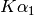 K-L3 Lb4 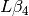 L1-M2 Ka2 K-L2 Lb5 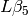 L3-O4,5 Ka3 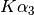 K-L1 Lb6 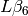 L3-N1 Kb1 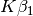 K-M3 Lg1 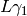 L2-N4 Kb2 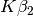 K-N2,3 Lg2 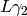 L1-N2 Kb3 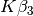 K-M2 Lg3 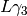 L1-N3 Kb4 K-N4,5 Lg6 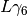 L2-O4 Kb5 K-M4,5 Ll L3-M1 La1 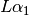 L3-M5 Ln 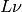 L2-M1 La2 L3-M4 Ma 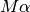 M5-N6,7 Lb1 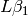 L2-M4 Mb 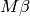 M4-N6 Lb2,15 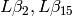 L3-N4,5 Mg 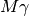 M3-N5 Lb3 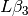 L1-M3 Mz 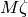 M4,5-N6,7
return the atomic number from an atomic symbol (‘H’, ‘C’, ‘Fe’, etc)
return the atomic symbol from an atomic number
return the atomic mass in amu from an atomic number or symbol
return the density of the common form of a pure element, in gr/cm^3, from an atomic number or symbol.
parse a chemical formula, returning a dictionary with element symbols as keys and number for each element as values. For example:
larch> chemparse("H2O")
{'H': 2.0, 'O': 1}
larch> chemparse("Mg0.2Fe0.8(SO4)2")
{'S': 2.0, 'Mg': 0.2, 'Fe': 0.8, 'O': 8.0}
Note that factional weights and even use of scientific notation for weights is supported, as long as the weight begins with a number and not ‘.’. That is ‘Fe0.8’, but not ‘Fe.8’.
return (edge energy, fluorescence yield, edge jump) for an atomic number or symbol and name of the edge. Edge energies are in eV.
return (emission energy, intensity, initial level, final level)for an atomic number or symbol and name of the emission line. The intensity is the probability of emission from the given initial level.
return dictionary of all (edge energy, fluorescence yield, edge jump) for an atomic number or symbol. The keys of the dictionay are the names of the edges.
return dictionary of all (emission energy, intensity, initial level, final level for an atomic number or symbol. The keys of the dictionay are the names of the emission lines.
return (fluorescent yield, average emission energy, probability) for an atomic number or symbol, edge, emission family, and incident energy.
Here, ‘emission family’ is the family of emission lines, ‘Ka’, ‘Lb’, etc, that is comprised of several individual lines (‘Ka1’, ‘Ka2’, ‘Lb2’, etc). The returned average emission energy will be the average of the corresponding individual sub-line energies, weighted by the probabilities of the individual lines. The returned probability will be the total probability for all lines in the family.
The fluorescence yield will also be returned, giving the same value as xray_edge() if the provided incident_energy is above or near the corresponding edge energy. The energy_margin controls the allowed proximity to the edge energy, so that the returned fluorescence yield will be 0 if the incident energy < edge energy + energy_margin.
return core electronic level width for an atomic number or symbol and name of the edge. widths are in eV.
return x-ray mass attenuation coefficient (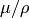) for an atomic number or symbol at specified energy values.
return coherent scattering cross-section for an atomic number or symbol at specified energy values. Values returned are in cm^2/gr.
return incoherent scattering cross-section for an atomic number or symbol at specified energy values. Values returned are in cm^2/gr.
return elastic scattering (Thomson) factor 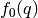 for the supplied values of q (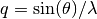 where 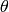 is the scattering angle and 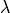 is the x-ray wavelength). Here, ion can be an atomic number or symbol, or any of the valid ion values (e.g., ‘Ga3+’) given by Waasmaier and Kirfel. The returned values are in units of electron number.
returns list of valid ions for f0(). If element is given (either an atomic number or symbol), then only the valid ions for that element will be returned.
returns array of energies (in eV) at whch data is tabulated in the Chantler tables. The arguments emin and emax can be used to restrict the range of returned energies.
return array of f’, the real part of the anomalous scattering factor for an element at the given energies, using the tabulation of Chantler. The returned values are in units of electron numbers, and represent the correction to Thomson scattering term.
return array of f’‘, the imaginary part of the anomalous scattering factor for an element at the given energies, using the tabulation of Chantler. The returned values are in units of electron numbers. These values scale to the values of the mass attenuation coefficient.
return x-ray mass attenuation coefficient () for an element at the specified energy values, using the tabulation of Chantler.
return tuple of (f’, f’‘), the real and imaginary anomalous scattering factors for an element at the specified energies, using the calculation scheme of Cromer and Liberman, as implemented by Brennan and Cowan. The optional argument width can be used to specify an energy width (in eV) to use to convolve the output with a Lorentzian profile (with width used as 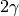 in the Lorentzian). If edge is given (‘K’, ‘L3’, etc), the core-level width is looked up from core_width(), and its value is used.
Note that both f’ and f’’ are returned here.
return anomalous components of the index of refraction for a material, using the tabulated scattering components from Chantler.
| Parameters: |
|
|---|---|
| Returns: | (delta, beta, t_atten) |
The material formula is parsed by chemparse(). The returned tuple contains the components described in the table below
value symbol description delta 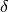 real part of index of refraction. beta 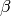 imaginary part of index of refraction. t_atten 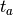 attenuation length, in cm.
and correspond to the anomalous scattering components of the index of refraction, defined in the equation below. Here, 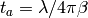, and and is the X-ray wavelength, 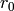 is the classical electron radius, and the sum is over the atomic species with number 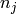 and total complex scattering factor 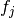.
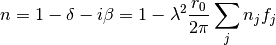
References
| [BrennanCowan] | S. Brennan and P. L. Cowen, A suite of programs for calculating x-ray absorption, reflection, and diffraction performance for a variety of materials at arbitrary wavelengths, Review of Scientific Instruments 63, pp850–853 (1992) [http://dx.doi.org/10.1063/1.1142625]. |
| [Chantler] | C. T. Chantler, Journal of Physical and Chemical Reference Data 24, p71 (1995) [http://www.nist.gov/pml/data/ffast/index.cfm]. |
| [CromerLiberman] | D. T. Cromer and D. A. Liberman Anomalous dispersion calculations near to and on the long-wavelength side of an absorption-edge, Acta Crystallographica A37, pp267-268 (1981) [http://dx.doi.org/10.1107/S0567739481000600]. |
| [ElamRavelSieber] | W. T. Elam, B. D. Ravel and J. R. Sieber, Radiation Physics and Chemistry 63 (2), pp121–128 (2002) [http://dx.doi.org/10.1016/S0969-806X(01)00227-4]. |
| [KeskiRahkonenKrause] | O. Keski-Rahkonen and M. O. Krause, Total and Partial Atomic-Level Widths, Atomic Data and Nuclear Data Tables 14, pp139-146 (1974) |
| [WaasmaierKirfel] | D. Waasmaier and A. Kirfel, New Analytical Scattering Factor Functions for Free Atoms and Ions, Acta Crystallographica A51, pp416-431 (1995) [http://dx.doi.org/10.1107/S0108767394013292]. |